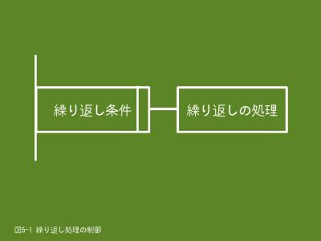

6. 繰り返し処理の制御（1/2）
6.1 繰り返し処理とは
- 
- 【図６-１】繰り返し処理の制御
３章の3.4.4 例題として、３人の肥満度（BMI）を計算するプログラムを掲載しましたが、そのプログラムでは身長と体重を入力して肥満度を計算して、結果を表示するという処理を３人分、つまり、同じ処理を３回記述していました。
３人分なので、まだよいのですが、これが100人分になったらソースファイルを作るだけでも大変な作業になりますし、現実的ではありません。このような場合は、人数分の繰り返しの中で肥満度の計算処理を行うようにすれば、１回記述するだけで済みます。
データが沢山あっても個々のデータに対して行う処理が同じ場合は、繰り返し処理の制御文を使うとプログラムが簡素化できて読みやすくなります。
繰り返し処理の実行は繰り返し条件により制御します。通常、繰り返し条件が成立（真）している間は繰り返しの処理を続行します。
6.2 while文とdo文
while文とdo文は条件が成立（真）している間は繰り返しの処理を続行します。そのため、繰り返しの処理の中で条件を不成立（偽）にする処理が必要です。これがないと永久に繰り返しを続行（永久ループ）してしまいます。
while文とdo文の相違は繰り返しの条件判定を行うタイミングです。while文は繰り返し処理に入る前に行い、do文は繰り返し処理の最後に行います。このことにより、繰り返しの条件が最初から不成立の場合、while文では繰り返し処理を行わないのに対して、do文では繰り返し処理が１回行われます。
6.2.1 形式
do文の場合はwhile(式)を後に記述します。
※ while文
while(式)
繰り返し実行する処理;
※ do文
do
繰り返し実行する処理;
while(式); ← ;（セミコロン）が必要です
- while(式)
- 「式」には繰り返しの条件を指定します。条件が成立（真）している間は繰り返しの処理を続行し、不成立（偽）になると繰り返しから抜け出します。
- 繰り返し実行する処理
- 処理が１文のみの場合はブロックにする必要はありませんが、複数の場合は{と}で括ってブロックにします。
6.2.2 例題
例題１
肥満度（BMI）の計算を行います。「繰り返し肥満度の計算をしますか（Y/N）」メッセージに対して「Y」を入力すると、再度、肥満度の計算を行い、それ以外を入力すると終了します。
#include <stdio.h>
int main()
{
char cont;
double taijyu;
double sinchyo;
printf("肥満度(BMI)の計算を行います\n");
cont = 'Y';
while(cont == 'Y' || cont == 'y')
{
printf("体重(kg)と身長(m)を入力してください ==> ");
scanf("%lf%lf", &taijyu, &sinchyo);
/* 肥満度(BMI) = 体重(kg) / 身長(m) / 身長(m) */
printf("肥満度は%.2fです\n", taijyu / sinchyo / sinchyo);
printf("繰り返し肥満度の計算をしますか（Y/N） ==> ");
scanf("%*c%c", &cont);
}
printf("終了します\n");
return 0;
}
$ ./ex06_1.prg
肥満度(BMI)の計算を行います
体重(kg)と身長(m)を入力してください ==> 68.5 1.75
肥満度は22.37です
繰り返し肥満度の計算をしますか（Y/N） ==> Y ← 再度計算を行いたいので「Y」を入力します
体重(kg)と身長(m)を入力してください ==> 54.5 1.63
肥満度は20.51です
繰り返し肥満度の計算をしますか（Y/N） ==> Y
体重(kg)と身長(m)を入力してください ==> 32.5 1.3
肥満度は19.23です
繰り返し肥満度の計算をしますか（Y/N） ==> N ← 終了したいので「N」を入力します
終了します
$
- 9行目
- 繰り返し制御用の変数contに初期値として「Y」を代入します。
- 10行目
- while文により繰り返しの制御を行います。変数contの値が「Y」または「y」の間、繰り返しの処理（肥満度の計算）を実行します。
- 18行目
- 繰り返しの処理を行うか否かの指示を変数contに入力します。この処理により、繰り返し制御条件が変わります。
例題２
機能は上記例題と同じですが、こちらはdo文で繰り返しの制御を行っています。この例題は最低１回は肥満度の計算を行いたいので、do文が適しています。
#include <stdio.h>
int main()
{
char cont;
double taijyu;
double sinchyo;
printf("肥満度(BMI)の計算を行います\n");
do
{
printf("体重(kg)と身長(m)を入力してください ==> ");
scanf("%lf%lf", &taijyu, &sinchyo);
/* 肥満度(BMI) = 体重(kg) / 身長(m) / 身長(m) */
printf("肥満度は%.2fです\n", taijyu / sinchyo / sinchyo);
printf("繰り返し肥満度の計算をしますか（Y/N） ==> ");
scanf("%*c%c", &cont);
} while(cont == 'Y' || cont == 'y');
printf("終了します\n");
return 0;
}
- 10、19行目
- do文により繰り返しの制御を行います。繰り返し制御用の変数contの初期化は不要です。